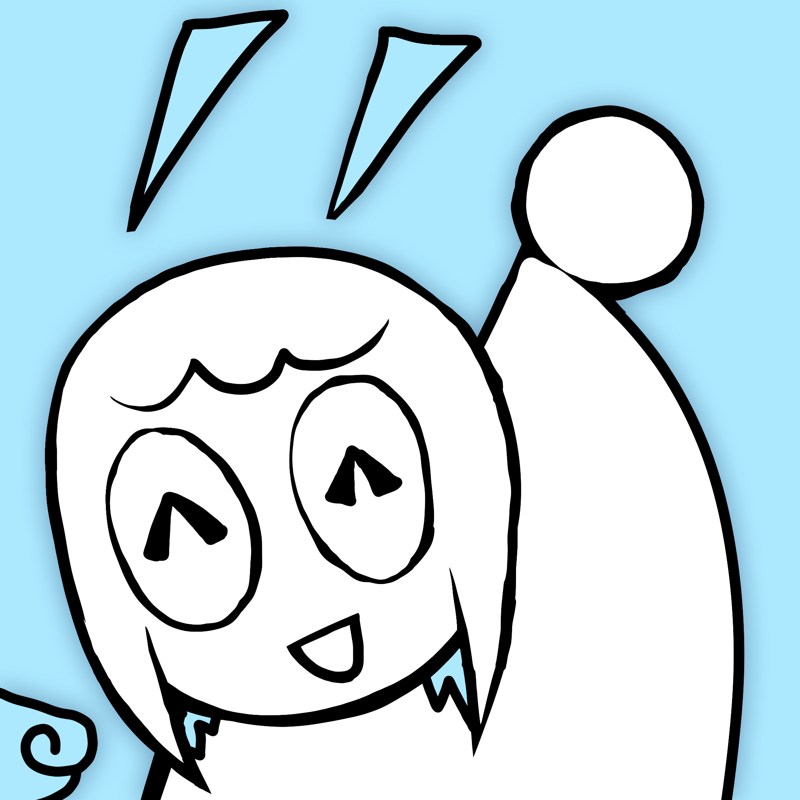

Description
Hyperspin is an experimental rhythm game where you control a circle that spins on a circle, and you tap circles. There are lots of circles.
History
Inspirations
Hyperspin was inspired by Taiko no Tatsujin, osu!, Soundodger, and the Rhythm Heaven series! Ever since Starpelly was a mere child, he always wanted to create his own rhythm game inspired by the ones he grew up with.
Development
Hyperspin entered production in mid-2025, sparked by a dream Starpelly had the night before. He began in Unity, but found it too slow and unreliable for what he had in mind. Rather than compromise, he built a new game engine from scratch called "Trinket," which still powers Hyperspin today.
Features
- Mods to make the game harder, easier, or more interesting
- Use a versatile level editor to create the maps of your dreams
- Choose between mouse or *almost* any button on your keyboard that suits your playstyle
- Develop your skills using practice mode
- Built from scratch in a custom game engine to support a low-latency and buttery-smooth experience
- Free!
Videos
Gameplay Video #1 — YouTube
Images


Logo & Icon



Widgets
Additional Links
- Hyperspin Forums
- Official community hub for the game. Players can share their own custom beatmaps here. hyperspingame.com.
About Boxsubmus
- Boilerplate
- Boxsubmus is a small and independent video game studio dedicated to developing quality software and video games.
- More information
- More information on Boxsubmus, our logo & relevant media are available here.
Hyperspin Credits
- Starpelly
- Director/Programmer/Designer, Boxsubmus
- Allyway
- Artist, Boxsubmus
- Mudstep
- Musician, Freelancer
Contact
- Inquiries
- pelly@boxsubmus.com
- Twitter/X
- x.com/boxsubmus